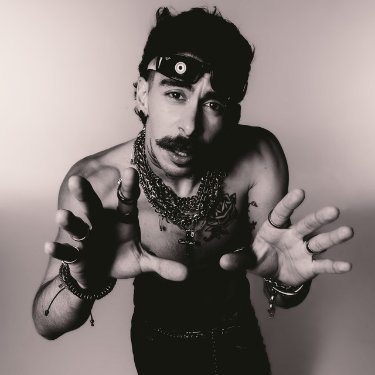
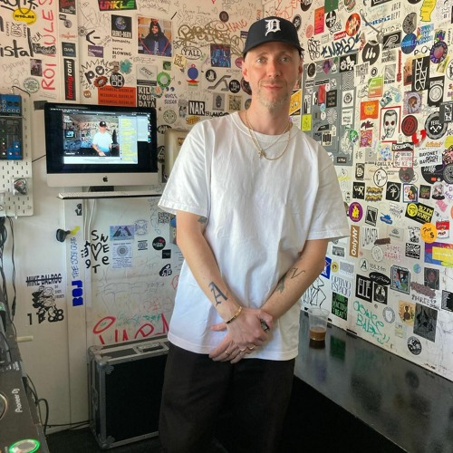

Meus DJs Favoritos (no momento)
Diplo
Thomas Wesley Pentz, conhecido como Diplo, é um DJ e produtor musical norte-americano que mistura em seus sets e produções, influências de moombahton, trap, dancehall, electro house e reggaeton.
Mochakk
Pedro Maia nasceu no dia 22 de setembro e é um virginiano que tem extrapolado as barreiras geográficas, chegando cada vez mais longe. O DJ, com apenas 23 anos de idade, já demonstra grande maturidade musical, resultado do seu esforço e estudos sobre tudo que envolve música.

Adam Port
Thomas Wesley Pentz, conhecido como Diplo, é um DJ e produtor musical norte-americano que mistura em seus sets e produções, influências de moombahton, trap, dancehall, electro house e reggaeton.
